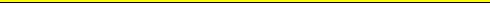

Description of the file format for example files and which is used by the 'pomdp-solve' program.
For a more complete and formal specification of the syntax of this file format see the 'POMDP grammar file'. There are some semantics to the format and these are discussed in this file.
All floating point number must be specified with at least one digit before and one digit after the decimal point.
Comments: Everything from a '#' symbol to the end-of-line is treated as a comment. They can appear anywhere in the file.
The following 5 lines must appear at the beginning of the file. They may appear in any order as long as they preceed all specifications of transition probabilities, observation probabilities and rewards.
discount: %f
values: [ reward,
cost ]
states: [ %d, <list
of states> ]
actions: [ %d, <list
of actions> ]
observations:
[ %d, <list of observations> ]
The definition of states, actions and/or observations can be either a number indicating how many there are or it can be a list of strings, one for each entry. These mnemonics cannot begin with a digit. For instance, both:
actions:4
actions: north south
east west
will result in 4 actions being defined. The only difference is that, in the latter, the actions can then be referenced in this file by the mnemonic name. Even when mnemonic names are used, later references can use a number as well, though it must correspond to the positional numbering starting with 0. The numbers are assigned consecutively from left to right in the listing starting with zero. The mnemonics are discarded once the whole file has been read in.
When listing states, actions or observations one or more whitespace characters are the delimiters (space, tab or newline). When a number is given instead of an enumeration, the individual elements will be referred to by consecutive integers starting at 0.
After the preamble, there is the optional specification of the starting state. For the current pomdp-solve code, this is completely ignored. It allows it to parse it to be compatible with newer versions of the specification. There are a number of different formats for the starting state, but I won't discuss them here. You won't need them for this program, and if you are runing them on a file that has them, then you'll know what they look like.
After the initial five lines and optional starting state, the speciifications of transition probabilities, observation probabilities and rewards appear. These specifications may appear in any order. Any probabilities or rewards not specified in the file are assumed to be zero.
You may also specify a particular probability or reward more than once. The definition that appears last in the file is the one that will take affect. This is convenient for specifying exceptions to a more general specification.
To specify an individual transition probability:
T: <action> : <start-state> : <end-state> %f
Anywhere an action, state or observation can appear, you can also put the wildcard character '*' which means that this is true for all possible entries that could appear here. For example:
T: 5 : * : 0 1.0
is interpreted as action 5 always moving the system state to state 0, no matter what the starting state was (i.e., for all possible starting states.)
To specify a single row of a particular action's transition matrix:
T: <action> : <start-state>
%f %f ... %f
Where there is an enter for each possible next state. This allows defining the specific transition probabilities for a particular starting state only. Instead of a list of probabilities the mnemonic word 'uniform' may appear. In this case, each transition for each next state will be assigned the probability 1/#states. Again, an asterick in either the action or start-state position will indicate all possible entries that could appear in that position.
To specify an entire transition matrix for a particular action:
T: <action>
%f %f ... %f
%f $f ... %f
...
%f $f ... %f
Where each row corresponds to one of the start states and each column specifies one of the ending states. Each entry must be separated from the next with one or more white-space characters. The state numbers go from left to right for the ending states and top to bottom for the starting states. The new-lines are just for formatting convenience and do not affect final matrix results. The only restriction is there must be NxN values specified where 'N' is the number of states.
In addition, there are a few mnemonic conventions that can be used in place of the explicit matrix:
identity
uniform
Note that uniform means that each row of the transition matrix will be set to a uniform distribution. The identity mnemonic will result in a transition matrix that leaves the underlying state unchanged for all possible starting states (i.e., the identity matrix).
The observational probabilities are specified in a maner similiar to the transition probabilities. To specify individual observation probabilities:
O : <action> : <end-state> : <observation> %f
The asterick wildcard is allowed in any of the positions.
To specify a row of a particular actions observation probability
matrix:
O : <action> :
<end-state>
%f %f ... %f
This specifies a probability of observing each possible observation for a particular action and ending state. The mnemonic short-cut 'uniform' may also appear in this place.
To specify an entire observation probability matrix for an action:
O: <action>
%f %f ... %f
%f $f ... %f
...
%f $f ... %f
The format is similiar to the transition matrices except the number of entries must be NxO where 'N' is the number of states and 'O' is the number of observations. Here too the 'uniform' mnemonic can be substituted for an enire matrix. In this case it will assign each entry of each row the probability 1/#observations.
To specify individual rewards:
R: <action> : <start-state> : <end-state> : <observation> %f
For any of the entries, an asterick for either <state>, <action>, <observation> indicates a wildcard that will be expanded to all existing entities.
There are two other forms to specify rewards:
R: <action> : <start-state>
: <end-state>
%f %f ... %f
This specifies a particular row of a reward matrix for a particular action and start state. The last reward specification form is
R: <action> : <start-state>
%f %f ... %f
%f %f ... %f
...
%f %f ... %f
which lets you specify an entire reward matrix for a particular action and start-state combination.

Last updated: 01/31/99